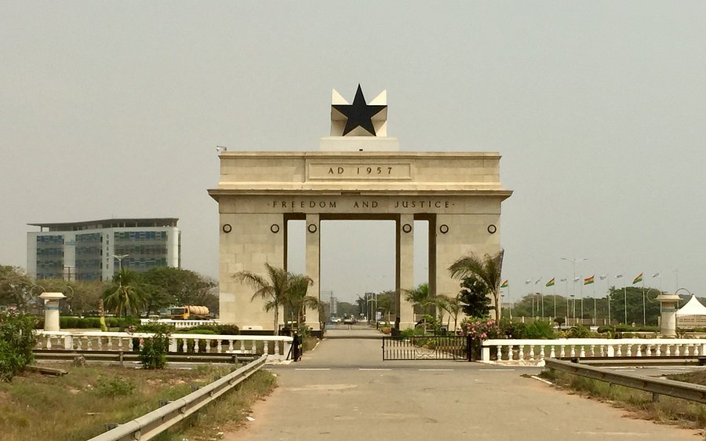
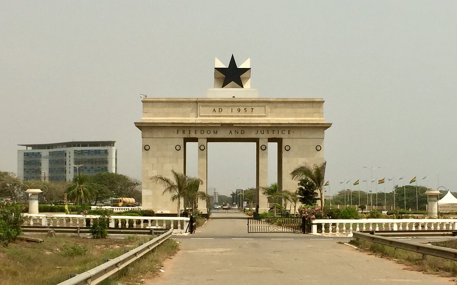
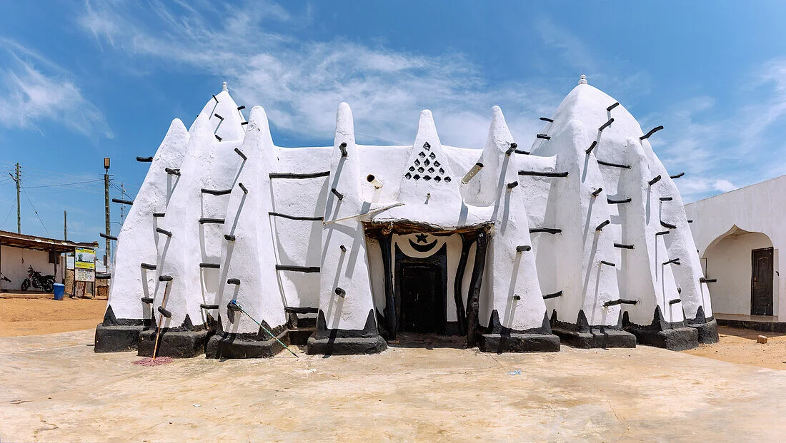
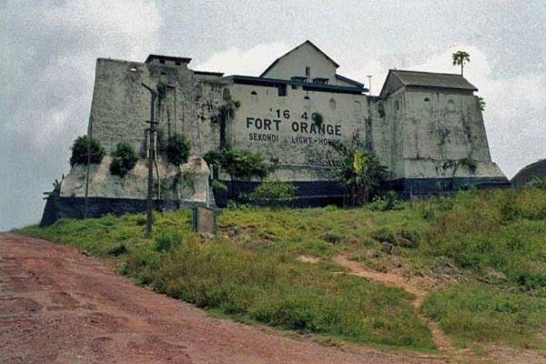

Ghana has a very rich history being the first African country in the Sahel to gain independence.
.jpg)
.jpg) 

Welcome to the Mecca of west Africa, built founded in !421, Larabanga mosque is a unique achitectural sudaneese style building and the oldest in Africa. Apart from beign fascinating, the mosque has alot of mysteries surrounding it. The mosque, situated in Larabanga, a villade in the Northerb region of Ghana has no ownwership meaning it is not known the person who built the mosque. It is believed by the indigenious people that it is a gift sent from heaven. The building has two tall towers shaped in a pyramid form with one facing tpwards Mecca and the other northeast.
Let me take you to the WEstern region of Ghana, The Orange Fort. now the Naval base of Ghana, The fort was established in 1642 by the dutch who wanted to expand trade with the locals. Sold to the United Kingdom in 1872 the Fort was built to serve as a lodge for the Dutch masters until 1690 when it became an important spot for trading. It has now been turned into a naval base for by the Ghana Habour authority.
